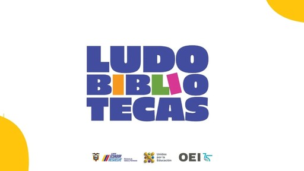

La ludobiblioteca es un espacio donde niños y jóvenes pueden leer y aprender mediante el juego.

Funciona en la Casa de la Cultura Núcleo de Los Ríos,
en General Barona y 9 de Noviembre, Babahoyo.
Abrir la ubicación en Google Maps
Transcripción del audio. Antes de visitar la Ludobiblioteca de Babahoyo, confirma el horario con la Casa de la Cultura.
Estamos en General Barona y 9 de Noviembre. Para consultas, encontrarás el teléfono y el correo en la sección de contacto de esta página.
Para confirmar el horario de la Ludobiblioteca, comunícate con la Casa de la Cultura Núcleo de Los Ríos.
| Canal | Dato de contacto |
|---|---|
| Teléfono | Llamar al (05) 202-0364 |
| Correo | Fernando.munoz@casadelacultura.gob.ec |
Si el enlace de correo no se abre, copia la dirección y pégala en el campo Para de tu correo.